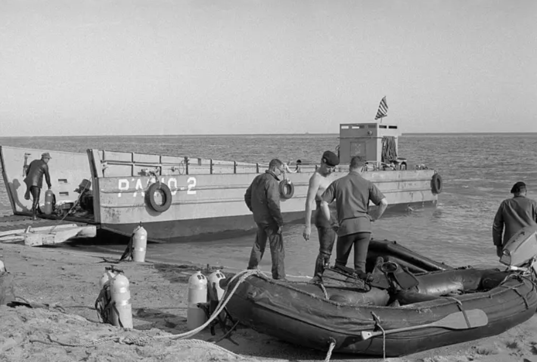

üí£ Cr√≥nica | El d√≠a que cay√≥ una bomba nuclear en Espa√±a
☁️ El choque en el aire

Era el 17 de enero de 1966. En los cielos de Palomares, una pedanía agrícola al sureste de España, dos aviones estadounidenses realizaban una maniobra rutinaria: un bombardero B-52 y un avión cisterna KC-135 reabastecían combustible en pleno vuelo. La misión formaba parte de la operación "Chrome Dome", una estrategia de disuasión nuclear. Lo que no sabían los habitantes del pueblo era que el B-52 transportaba cuatro bombas termonucleares.
El choque fue brutal. En segundos, los restos de los aviones comenzaron a caer sobre campos de cultivo y aguas del Mediterráneo. Murieron siete tripulantes. Y lo que parecía un simple accidente aéreo se convirtió en una pesadilla radiactiva.
üèòÔ∏è Un pueblo que no sab√≠a lo que ca√≠a

Palomares, por entonces, no era más que un tranquilo pueblo de agricultores. La mayoría de sus habitantes cultivaban tomates y cítricos, ajenos al hecho de que vivían bajo una ruta de vuelos nucleares. Tras el accidente, tres de las bombas cayeron en tierra. Dos de ellas se rompieron al impactar, liberando polvo de plutonio altamente radiactivo.
"No sabíamos nada. Nos dijeron que no pasaba nada, que todo estaba bajo control", recuerda un testigo local en un documental años después. Mientras tanto, soldados estadounidenses y técnicos entraban al pueblo con trajes especiales, recogiendo tierra, marcando zonas, tomando muestras. El miedo crecía, pero la información no llegaba.
üßπ Limpieza apresurada, pero incompleta
Durante 80 días, la Marina de EE.UU. rastreó el fondo marino frente a las costas de Palomares. La búsqueda incluyó buzos, submarinos, radares, e incluso aparatos experimentales. Finalmente, un sumergible llamado Alvin logró localizarla a casi 900 metros de profundidad. La recuperación fue tan compleja como secreta, pero la tensión internacional era evidente.
El mundo seguía con atención el caso. ¿Cómo era posible que una bomba nuclear se perdiera así? ¿Qué más podía estar oculto?
ü©± El ba√±o más famoso de la Guerra Fr√≠a
Para calmar a la opinión pública, EE.UU. y el régimen franquista organizaron un acto insólito: el embajador estadounidense, Angier Biddle Duke, y el ministro franquista Manuel Fraga, se bañaron en la playa de Palomares frente a cámaras. Sonreían. Mostraban confianza. Decían al mundo: “No hay peligro”.

La imagen se volvió icónica. Pero todos sabían que no se bañaron en la zona más contaminada.
üïµÔ∏è‚Äç‚ôÇÔ∏è Secretos, silencio y legado
Durante años, poco se habló del accidente. EE.UU. nunca publicó toda la información. España, bajo Franco, tampoco pidió explicaciones. Fue solo con los años —y los testimonios de científicos, militares y habitantes— que se fue reconstruyendo la historia.
Hoy, Palomares sigue marcado por ese día. Algunos terrenos están cerrados. Se siguen haciendo estudios. Y aún se debate qué hacer con los restos de contaminación.
La Guerra Fría dejó muchas historias, pero pocas tan extrañas como la de aquel día en que una bomba nuclear cayó —por error— en un pueblo andaluz.